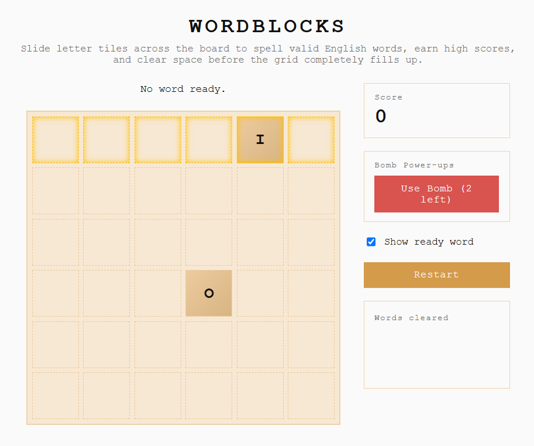
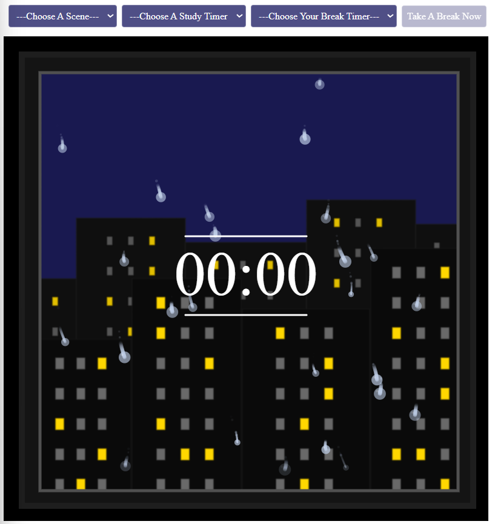
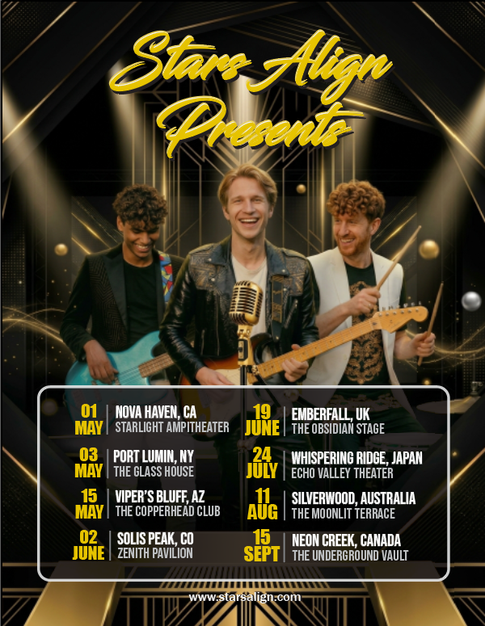

Featured Projects

Botanic Bloom Bistro Website & Brand Identity System
Designed and developed a complete brand identity system and front-end website for an original, conceptual restaurant brand. This project bridges graphic design and interactive web development— combining custom brand collateral with a responsive, feature-rich web application.
View Case Study
WordBlocks Game
An interactive, web-based word puzzle game that combines the tile-sliding mechanics of 2048 with the word-building of Scrabble. The game challenges players to slide letter tiles across a 6x6 grid using keyboard or swipe controls to form words before the board fills up. It features custom scoring algorithms, wildcard tiles, grid-clearing power-ups, and an automated endgame sweep.
View Case Study
Alphabet Project
A typographic and visual design study inspired by Pentagram’s Osh Gallery Alphabet. Guided by Gestalt principles, this project explores the boundaries between legibility and abstraction— deconstructing all 26 letterforms into an evolving narrative story. Early letters begin as minimalist, geometric foundations, and progressively escalate into more intricate, motif-driven visual identities.
View Case Study
Bay City High School
A comprehensive, multi-page web application designed for a fictional high school, serving students, parents, alumni, and faculty. Built with a focus on information architecture and navigation flow, the project features tabbed content routing, interactive client-side tools— including event RSVP forms with guest logic and a weekly cafeteria menu toggle— alongside custom profile modals and a unified brand identity system.
View Case Study
WordBlocks Twist - 3D Game
An experimental 3D version of the original word puzzle game, introducing Rubik’s Cube-inspired slice rotations. This version of the game allows players to twist horizontal and vertical slices, rotate the board , and form cross-face word combinations. Features slice-freezing power-ups, board reshuffling, and custom 3D matrix math prototyped alongside AI tools.
View Case Study
StudyScape: Ambient Pomodoro-Style Program
An interactive, ambient, pomodoro-style study timer application designed to mix productivity with relaxing visuals. The app features a class model and off-screen canvas buffers for high-performing graphics. It also includes particle physics for different weather states and a finite state machine that handles live timer logic and DOM control synchronization.
View Case Study
Stars Align Tour Campaign
A comprehensive promotional toolkit and visual identity system created for an original, fictional band world tour. Built around cross-media guidelines, the project features both symmetrical and asymmetrical tour posters, an adapted three-slide mobile social media carousel, and a physical concert ticket that maintain strict visual consistency and information hierarchy.
View Case Study